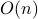

Solving Systems of Random Quadratic Equations via Truncated Amplitude Flow
Given observed data Besides linear sample complexity  and computational complexity , our Truncated Amplitude Flow (TAF) is a two-stage nonconvex solution algorithm that
|
 and feature vectors
and feature vectors  , our goal is to solve for a system of (phaseless) quadratic equations
, our goal is to solve for a system of (phaseless) quadratic equations
 , .
, .Solving Systems of Random Quadratic Equations via Truncated Amplitude Flow.
Authors: G. Wang, G. B. Giannakis, and Y. C. Eldar
This paper puts forth a new algorithm, termed emph{truncated amplitude flow} (TAF), to recover an unknown  -dimensional real-/complex-valued vector from
-dimensional real-/complex-valued vector from  quadratic equations of the form
quadratic equations of the form  . This problem is known to be NP-hard in general. We prove that as soon as the number of equations is on the order of the number of unknowns , TAF recovers the solution exactly (up to a global unimodular constant) with high probability and complexity growing linearly with the time required to read the data. Our method adopts the amplitude-based cost function and proceeds in two stages: In stage one, we introduce an orthogonality-promoting initialization that is obtained with a few simple power iterations. Stage two refines the initial estimate by successive updates of scalable truncated generalized gradient iterations.
The former is in sharp contrast to existing spectral initializations, while the latter handles the rather challenging nonconvex and nonsmooth amplitude-based cost function. In particular for real-valued vectors, our gradient truncation rule provably eliminates the erroneously estimated signs with high probability to markedly improve upon its untruncated version.
Numerical tests demonstrate that our initialization method returns more accurate and robust estimates relative to its spectral counterparts. Furthermore, even under the same initialization, our amplitude-based
refinement outperforms Wirtinger-based alternatives, corroborating the superior performance of TAF over state-of-the-art algorithms.
. This problem is known to be NP-hard in general. We prove that as soon as the number of equations is on the order of the number of unknowns , TAF recovers the solution exactly (up to a global unimodular constant) with high probability and complexity growing linearly with the time required to read the data. Our method adopts the amplitude-based cost function and proceeds in two stages: In stage one, we introduce an orthogonality-promoting initialization that is obtained with a few simple power iterations. Stage two refines the initial estimate by successive updates of scalable truncated generalized gradient iterations.
The former is in sharp contrast to existing spectral initializations, while the latter handles the rather challenging nonconvex and nonsmooth amplitude-based cost function. In particular for real-valued vectors, our gradient truncation rule provably eliminates the erroneously estimated signs with high probability to markedly improve upon its untruncated version.
Numerical tests demonstrate that our initialization method returns more accurate and robust estimates relative to its spectral counterparts. Furthermore, even under the same initialization, our amplitude-based
refinement outperforms Wirtinger-based alternatives, corroborating the superior performance of TAF over state-of-the-art algorithms.